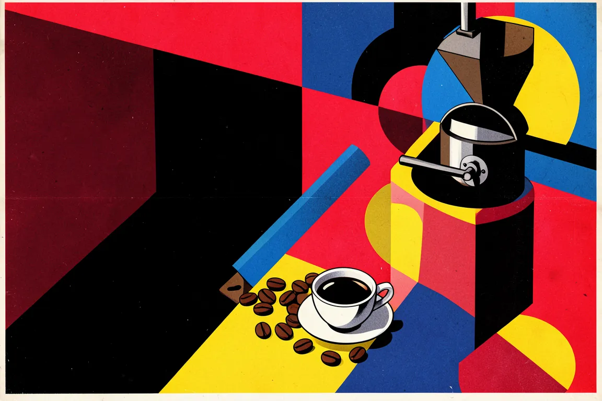

grafiske retninger · 1919–1933 · også: Bauhaus-typografi, Ny typografi, Neue Typographie
Geometri i primærfarger, sans serif-skrift med små bokstaver og strenge vannrette og loddrette akser med dristige diagonaler. Stilen kom fra Bauhaus-skolen i Weimar, Dessau og Berlin, og smeltet sammen håndverk og industriell produksjon.

Kjerneidé
Formen følger funksjonen, og et lite sett av sirkel, kvadrat og trekant i tre primærfarger er nok til å lage enhver gjenstand for masseproduksjon.
Designprinsipper
Reduser hver komposisjon til sirkelen, kvadratet og trekanten, og gi hver form én primærfarge: rød, blå eller gul.
Organiser siden på sterke vannrette og loddrette akser, og legg til diagonaler på 45 grader for spenning.
Sett tekst i en geometrisk sans serif, og bruk tunge staver på 8px til 24px som strukturelle elementer.
Bruk små bokstaver i overskrifter, som i Herbert Bayers universelle alfabet fra 1925.
Kontrastér skalaen hardt: sett ett element 5 til 10 ganger så stort som det minste.
Bruk svart, hvitt og én primærfarge om gangen på en flate, og hold feltene flate og ugjennomsiktige.
La hvert element bære informasjon; fjern ethvert element som bare har en dekorativ rolle.
Antimønstre
Ornamentale snirkler, snirkelverk eller gjenopplivede skrifttyper
Symmetriske sentrerte layouter med én eneste balanseakse
Myke gradienter, glød og fotorealistiske teksturer
Pastell- eller tertiærfarger i stedet for de tre primærfargene
Avrundede dekorative beholdere med radius over 0px
Serif-brødtekst i Fraktur- eller Didone-stil
Tilfeldig rotasjon av elementer i andre vinkler enn 0, 45 og 90 grader